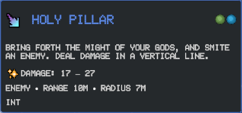
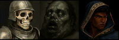
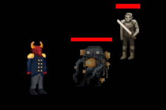
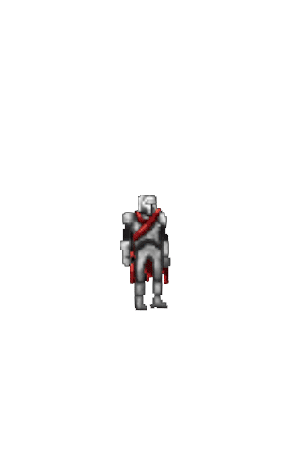

Stryker's Revenge
About the Game
Stryker’s Revenge is a turn-based, top-down tactical RPG inspired by tabletop systems like Dungeons & Dragons. Players command a small party of adventurers, each with unique abilities, action economy, and positioning choices that matter every turn.
Combat emphasizes turn order awareness, resource management, and smart party switching. Characters can be swapped mid-battle to adapt to changing threats, recover fallen allies, or reposition strategically.
This vertical slice was built entirely in Unity and focuses on combat systems. I was responsible for all gameplay logic, AI behavior, UI systems, and animation/VFX implementation.
How to Play
Movement & Camera
- WASD — Move your active character
- Shift — Sprint (outside of combat)
- Movement is limited during combat and resets each turn
Combat Turns
- Each turn grants 1 Action and 1 Bonus Action
- Abilities may consume actions, bonus actions, or spell slots
- Hover abilities to view damage, range, scaling, and effects
Party Management
- Switch characters using Z / X / C / V
- You can also click portraits to swap instantly
- Switching mid-battle costs a bonus action
Help
- Press ESC to pause the game
- Access Help, Options, and Controls from the pause menu
- Press K to get in-depth stats of the current character
Gameplay Systems

Dynamic ability tooltips showing damage ranges, scaling attributes,
resource costs, and special effects.

Example breakdown of an ability tooltip.

Turn order display during combat. Leftmost goes first.

Basic attack with combat feedback.

Party management and switching UI.

Switch characters using Z/X/C/V, in or out of combat.